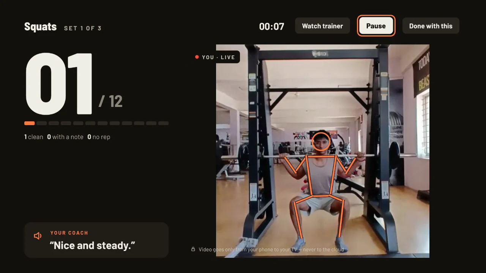
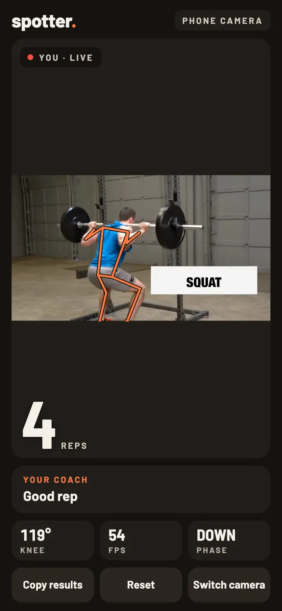
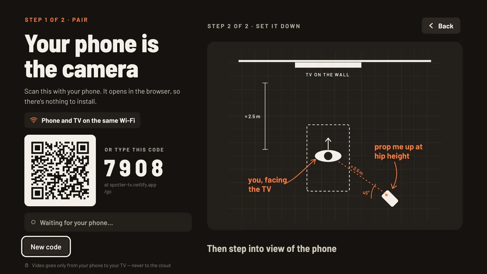
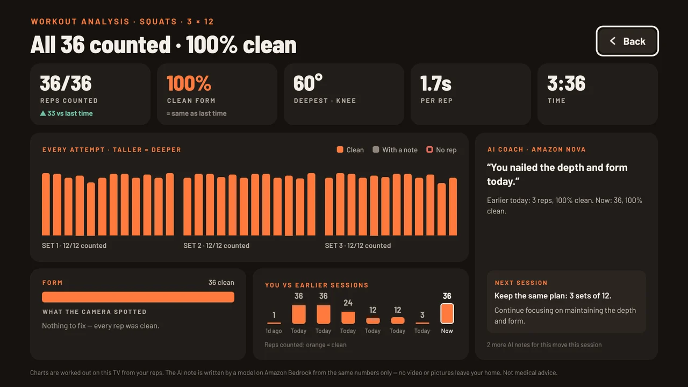
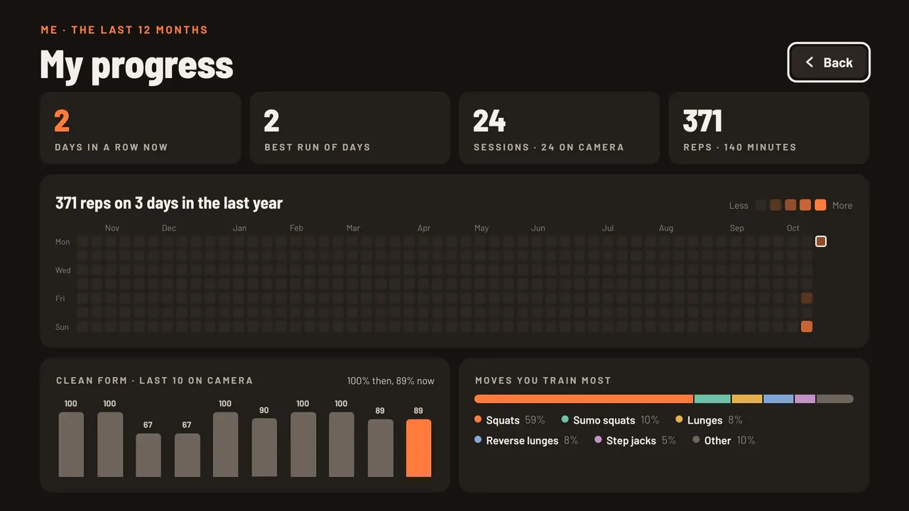
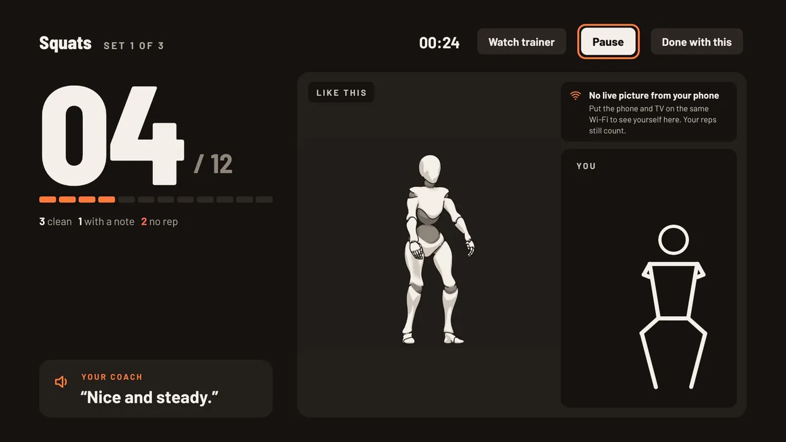

A workout coach for Amazon Fire TV
Your phone is the camera. Your TV is the coach.
Prop up the phone you already own. It watches your form; the TV counts every rep, tells you what to fix in a coach's voice, and never counts a rep that doesn't count.
- Any Fire TV — even the 1 GB stick
- Your phone — nothing to install
- 2 metres of floor


An honest spotter
Every rep judged. None of them given away.
A rep only counts when it's real. When it doesn't, Spotter says why — and it knows a lunge from a squat, a reverse lunge from a forward one, and a step jack from a jumping jack.
Good depth.
Deep enough, knees out, chest up. Counted, and coloured orange on your receipt.
Push your knees out.
The rep counts, and the coach tells you the one thing to fix on the next one.
That's a lunge — this set is squats.
Not low enough, the wrong move, or you wandered off your spot: it doesn't count, and you hear why.
Tested in a real gym
Real lifters, real reps — judged by the same code that runs on your phone.
How it works
Pick a move. Scan. Train.
No account, no app on your phone, no camera to buy. The TV leads; the phone just watches.

Pick a move on the TV
Squats, lunges, jumping jacks, push-ups or glute bridges. The TV shows a QR code and a 4-digit code.
Scan it with your phone
The camera page opens in the browser. Prop the phone at hip height, about 2.5 m away, turned 45° to you.
Train — it starts itself
When the phone can see you, a 5-second countdown starts the set. Reps, rests and the coach's voice come from the TV.

After every move
See exactly how it went.
- A bar for every attempt, by set: how deep, and whether it counted.
- What the camera spotted most, and how today compares with last time.
- A coach's note from Amazon Nova on Amazon Bedrock, written from your numbers only.

For everyone in the house
A year at a glance.
- One square per day, darker the more reps you did.
- Streaks, clean form over time and the moves you train most.
- A profile per person, kept on the TV. No sign-in.

Built for real living rooms
Even when the picture can't get through.
- On guest or office Wi-Fi the video can't cross — the 3D trainer shows the move instead, and your outline still follows you.
- Reps still count, and the coach still talks.
- No camera on the TV? Follow along with the trainer instead, on a steady beat.
Private by design
Your picture never leaves your home.
Body tracking runs on your phone. The video goes straight to your TV. Only numbers ever reach the internet. Read the privacy policy.
Your phone
Finds your body in each frame and judges every rep, right in the browser.
home Wi-Fi only
Your Fire TV
Shows you, keeps the count, speaks, and keeps everyone's history — on the TV.
no video, ever
AWS
Links phone and TV with a code that expires in 2 hours, and writes the AI note if you ask for one.
Open source
The rep engine is yours to use.
spotter-movement turns pose points into reps, holds and honest form feedback. MIT licensed, 72 tests, exercises defined as plain data — add your own without new code.
import { RepDetector, squat } from 'spotter-movement';
const detector = new RepDetector(squat);
// Every video frame, from MediaPipe:
const update = detector.update({
t: performance.now(),
landmarks: result.landmarks[0],
});
if (update.rep) {
update.rep.verdict; // 'no-rep'
update.rep.cues; // ["Not deep enough"]
}Built for Build, Ship, Shape — the Amazon Developer Hackathon 2026